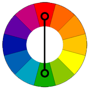

Color Wheel Schemes
Monochromatic Scheme
One hue plus white, gray, or black to create tints, tones, or shades
Complementary (Contrast) Scheme
Colors across each other on the color wheel
Common pairs include:
- Red and Green
- Purple and Yellows
- Blue and Orange
Analogous (Analogic) Scheme
Colors next to each other on the color wheel
Triadic Schemes
Three colors that are evenly spaced around the color wheel
Split-Complementary Schemes
A color and two colors adjacent to its complementary color
Tetradic (Double Comblementarv) Scheme

Four colors arranged in two complementary pairs